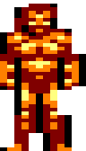
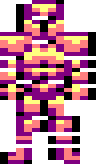
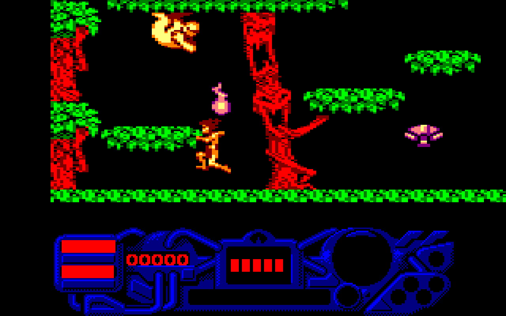
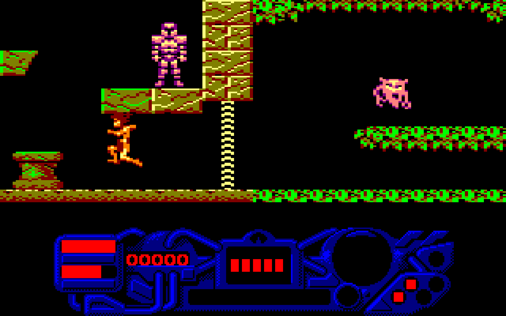
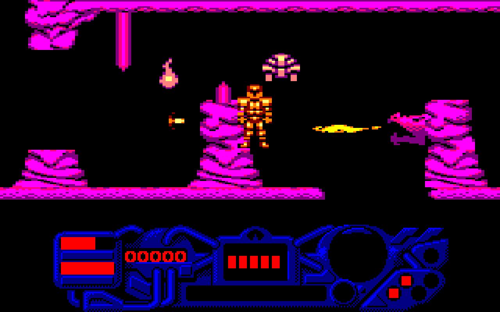
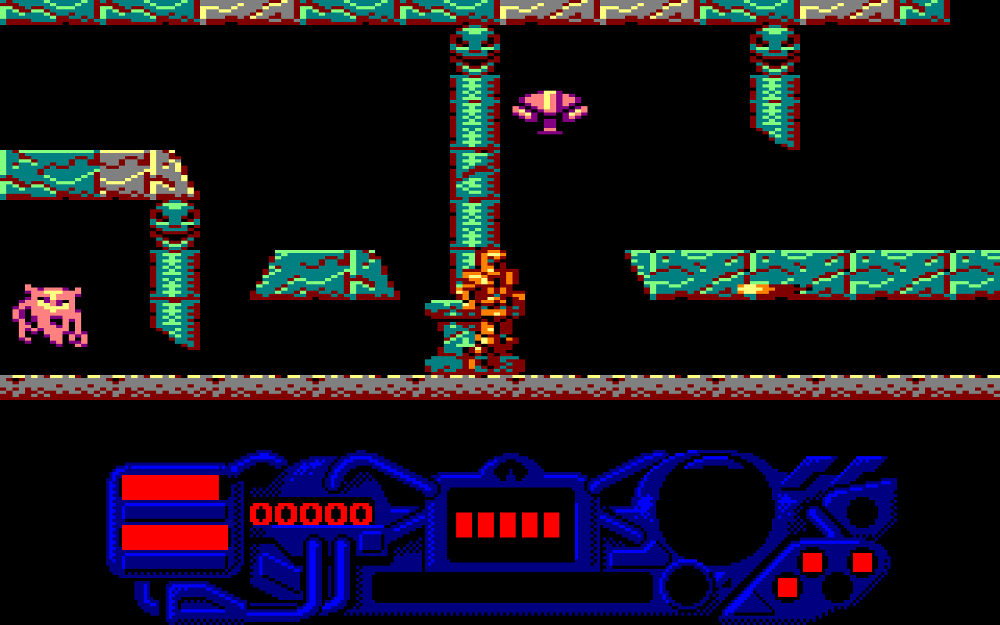
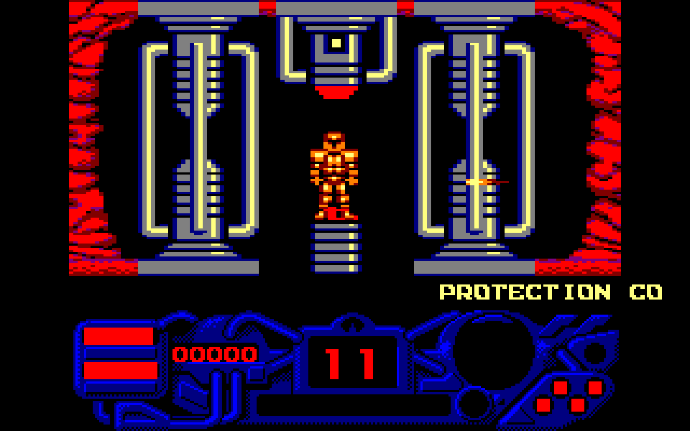
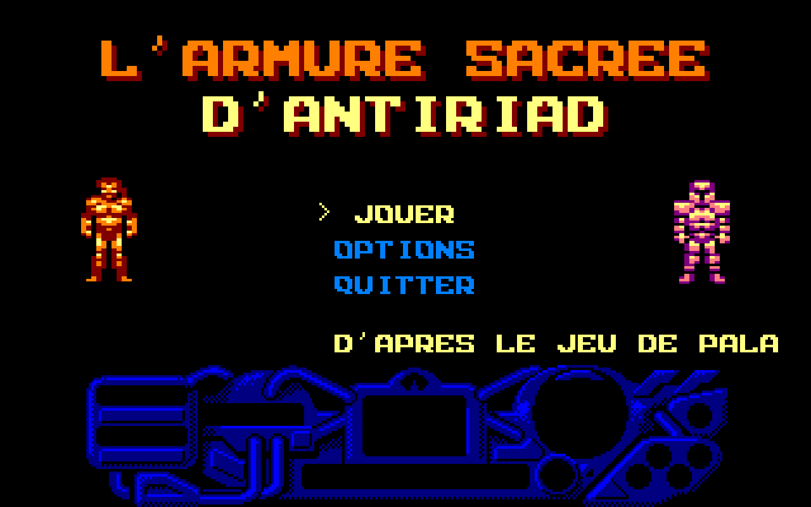

Une guerre nucléaire a rendu l'humanité à l'âge de pierre. Les envahisseurs règnent depuis leur base cachée dans un volcan. Tal part chercher la relique de sa tribu : l'armure « ANTI-RAD » de l'ancien monde.
JouerDans le navigateur, gratuit, sans installation · clavier, manette ou écran tactile
Un monde ouvert de 69 écrans à explorer : la jungle et ses arbres géants, les grottes radioactives, les ruines souterraines, puis la base des envahisseurs. Sans armure, Tal est fragile : il saute, lance des pierres et s'accroupit pour ramasser ce qu'il trouve. Dans l'armure, il encaisse les coups, vole et tire, à condition d'avoir retrouvé ses modules et d'économiser son énergie.






Chaque vol, chaque tir et chaque coup vident l'énergie de l'armure : les cellules de recharge la remplissent. Sans armure, la vie de Tal baisse au contact des créatures et dans les grottes irradiées ; dans l'armure, elle revient. Cinq vies (« rajeunissements »), peu d'indications : on apprend en explorant.
| Clavier | Flèches : marcher · Haut : sauter (voler dans l'armure) · Espace : lancer une pierre / tirer · Bas : s'accroupir, ramasser, entrer dans l'armure · E : entrer dans l'armure / en sortir · Échap : pause |
|---|---|
| Manette | Croix ou stick : marcher · A : sauter / voler · X : lancer / tirer · Y : armure · Start : pause |
| Téléphone | Pavé de flèches à l'écran (haut = sauter / voler) · FEU : lancer / tirer · ARMURE : entrer / sortir · en mode paysage |
Ce remake est écrit en PHP avec JumPHP et tourne dans le navigateur grâce à WebAssembly. Les écrans, les sprites, la police, les textes et la musique viennent de la disquette de la version CPC, lus par dsk2jumphp là où le code du jeu les lit : la carte des sorties, les collisions par couleur, les scripts de déplacement des créatures, la chute de Tal, les dégâts, les radiations… Les messages existent en français, en anglais et dans l'espagnol de la disquette.
Le jeu d'origine : The Sacred Armour of Antiriad (Rad Warrior aux États-Unis), Palace Software, 1986, sur Amstrad CPC, ZX Spectrum et Commodore 64. Programmation Andrew Fitter, graphismes Dan Malone, musique Richard Joseph. Tous les droits du jeu d'origine appartiennent à leurs détenteurs.